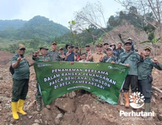

SUMEDANG, PERHUTANI (09/01/2026)| Dalam rangka penanganan pasca kejadian tanah longsor di Desa Pamekarsari Kecamatan Surian Kabupaten Sumedang yang terjadi pada Jumat (13/12/2025), Perum Perhutani Kesatuan Pemangkuan Hutan (KPH) Sumedang bersama unsur Muspika Kecamatan Surian dan Kecamatan Buahdua, unsur Pos Koramil Buahdua, unsur Pemerintah Desa Pamekarsari dan masyarakat penggarap melaksanakan penanaman bibit pohon di sekitar lokasi tanah longsor pada Kamis (08/01).
Administratur Perhutani KPH Sumedang Avid Roliick menyampaikan bahwa penanaman kali ini merupakan tahap awal sebanyak 200 bibit pohon, dari rencana sebanyak 3.500 bibit pohon jenis Mahoni, Kaliandra dan buah - buahan yang akan ditanam pada daerah penyangga disekitar lokasi longsoran guna mengantisipasi kejadian serupa dimasa yang akan datang.
“Penanaman yang dilaksanakan kali ini sebanyak 200 pohon sebagai tahap awal penanganan pasca bencana dari rencana keseluruhan sebanyak 3.500 bibit pohon yang difokuskan pada sekitar lokasi longsoran sebagai daerah penyangga untuk mengantisipasi kejadian serupa dimasa yang akan datan,”ungkapnya.
Ia juga menyampaikan penanaman tahap berikutnya akan terus dilakukan pada lokasi penyangga lainnya terutama yang masuk kawasan hutan setelah kondisi lokasi longsoran aman sehingga tidak berpotensi membahayakan.
“Kami akan melakukan penanaman untuk tahap berikutnya terutama pada lokasi kawasan hutan lainnya yang menjadi penyangga setelah kondisi lokasi longsoran benar –benar aman untuk dilakukan aktivitas sehingga tidak berpotensi membahayakan,”pungkasnya.
Pada kesempatan yang sama Camat Kecamatan Surian Ahmad Aradea mengucapkan terima kasih kepada Perum Perhutani dan Kodim 0610 Sumedang yang diwakili Danposmil Buahdua serta pihak yang terlibat lainnya atas terlaksananya penanaman pada sekitar lokasi tanah longsor kali ini, ia juga menyampaikan penanaman berikutnya akan dilakukan secara terpadu melibatkan seluruh unsur Pemerintah Kecamatan Surian dan masyarakat sekitar termasuk kelompok tani yang ada di Desa Pamekarsari.
“Terima kasih kepada Perum Perhutani KPH Sumedang yang telah menginisiasi penanaman kali ini dan terima kasih juga kepada perwakilan Kodim 0610 Sumedang dan pihak lainnya yang telah bersama – sama melaksanakan penanaman, penanaman berikutnya akan dilakukan secara terpadu bersama seluruh unsur Pemerintah Kecamatan Surian dan masyarakat sekitar termasuk kelompok tani yang ada di Desa Pamekarsari,”ungkapnya.
Editor: WK
Copyright © 2026 Warta Nusantara Barat